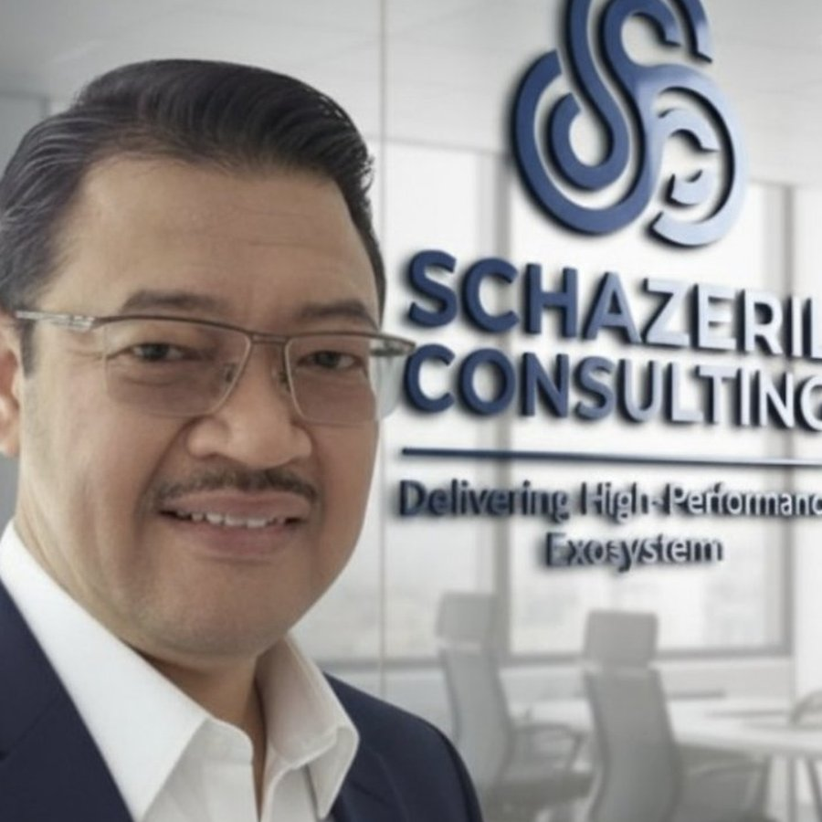

Scaling Without Chaos.
Helping organisations build the capacity to grow, execute and transform without allowing complexity to outpace their ability to perform.
Performanceis engineered.
Cultureis shaped.
Transformationis intentional.
Does this sound familiar?
Most organisations do not lack strategy. They lack the organisational conditions to execute it as they grow.
Growth is outpacing how the organisation works.
What worked at fifty people is straining at five hundred. Coordination problems keep coming back.
How SC helpsPerformance is slowing, and no one can say exactly why.
The symptoms are visible, but the underlying sources of friction are not.
How SC helpsA major transformation is not delivering the value expected.
ERP, restructuring or M&A activity is running, but adoption and value realisation lag behind.
How SC helpsToo many decisions still land on the leadership team.
Senior leaders need a trusted practitioner perspective, and stronger capability inside the organisation.
How SC helpsPerformance at scale is a system, not an initiative.
The High-Performance EXOSYSTEM™ is how SC sees organisations: as one interconnected system rather than a collection of separate functions, projects and initiatives. Sustained performance comes from how the whole organisation works together.
How strategy, goals and reviews connect, so every level knows what matters and who owns it.
How work actually flows, and whether it is reliable without adding bureaucracy.
Who decides what, at which level, so decisions stop queueing at the top.
The routines and leadership behaviours that let people act like owners.
Four ways to engage with SC
Start wherever is most useful to you. There is no fixed path.
How SC thinks
Executive Insights, Outside-In perspectives, books, podcasts and frameworks.
Explore IdeasUnderstanding organisational reality
The Organisational Effectiveness Diagnosis (OED) identifies the sources of friction.
Explore DiagnosisConversations that matter
Scaling Without Chaos Executive Dialogues for business owners, CEOs and senior leaders.
Explore DialogueFrom understanding to action
Three core offerings and capability programmes that create sustained improvement.
Explore TransformWhat clients achieve
The outcomes leaders engage SC for.
Growth that holds.
Change that delivers.
Decisions that move.
Performance that lasts.
Why leaders choose SC
Deep specialist experience and direct senior involvement, without the layers of a large consulting firm.
Senior practitioners, directly involved
The people who scope the work are the people who do the work.
Built from operating reality
Two decades inside large organisations running transformation, not only advising on it.
The whole organisation, not one function
The High-Performance EXOSYSTEM™ connects structure, process, decisions and behaviour.
Boutique by design
Focused attention and no unnecessary layers or bureaucracy.
“Client testimonial to be supplied by SC, with the client's permission.”Name, title, organisation Sample
“A second testimonial, ideally from a CEO or business owner.”Name, title, organisation Sample
Executive Insights
Selected perspectives on growth, organisational complexity and transformation.
Scaling Without Chaos: a 20-part series
Why growth so often outpaces the operating model, and what leaders can do about it.
Transformation fatigue is a design problem
When people stop believing in change, the issue is rarely motivation.
Decision rights: the quiet constraint on scale
How unclear decision authority slows execution as organisations grow.
Books, podcasts and video
Enough Change
An SC publication on organisational change. Synopsis and cover to be supplied by SC.
Learn moreWhat Change?
An SC publication on organisational change. Synopsis and cover to be supplied by SC.
Learn moreConversations on scaling without chaos
Short-form videos and podcast episodes from SC and its Executive Dialogues.
Senior practitioners who have run the systems they now design.
SC is led by Schazeril Shamsuddin, who spent more than two decades inside large organisations making transformation hold, most recently as Head of the Transformation Office at Petronas Chemicals Group.
Every engagement is shaped by that operating reality: strategic thinking grounded in how organisations actually work.

“Performance at scale is a system, not an initiative.”
Ready to scale without chaos?
Start a conversation with SC about where your organisation is today.